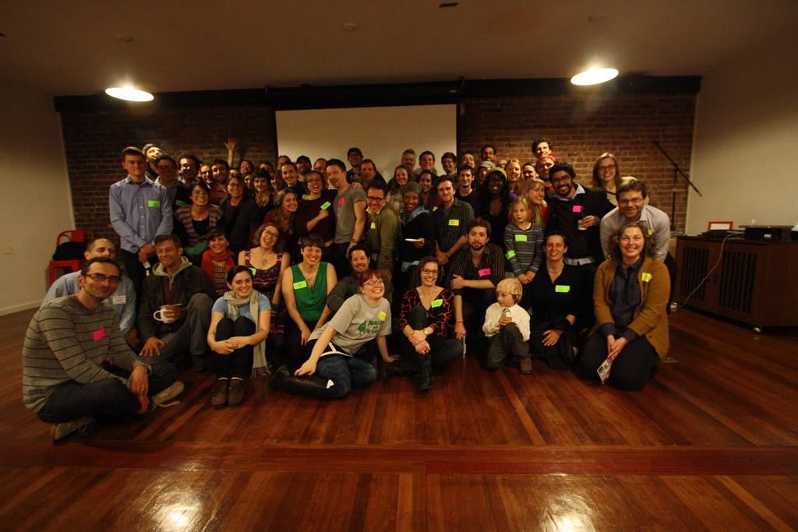

Nerds for Nature.
Bringing together technologists and environmental professionals to collaboratively build awesome tools to understand, protect, and revive the natural world.
What's next?
Get email announcements or follow us on Twitter for workshops and events.
Thanks to all who attended our sold out February 21st Launch Party in SF!
Read a reflection on event below


Map it
The data's out there: Where are the parks? Which birds live where? What are the biggest local polluters? Let's map it!

Build it
Hardware’s cheaper than ever: Infrared heat sensors, water quality and flow monitors, pollution sensors. Let's build it!

Together
The Bay Area is at the cutting edge of new technology and innovative environmental action and policy. Let's work together!

Launch Reflection
Why I Nerd for Nature (and what might that mean?)
by Victoria Bogdan
Last week nearly 100 people showed up and wrote their needs, haves, and project ideas on color-coded post-it notes, affixed them to a wall, and collectively created what can be called a “mind map.” It was chaotic, it was inspiring, and it was a celebration.
But perhaps more than anything, it was a relief-- and confirmation. We had all found each other: web coders, hardware hackers, designers, journalists, scientists, educators, conservationists, investors, advocates, all who think that contributing their skills on behalf of the Earth is a good idea-- and that there is strength in working together rather than alone. The trick was that this array of skills with environmental interests had never been brought together before in the SF Bay Area.
The idea for what became Nerds for Nature started last year. A group of us had met at other various Bay Area events (such as Code for Oakland) and had a hunch there were others looking for the same thing. After a series of meetings well-supplied by tasty snacks, we were ready to launch.
There’s one small catch though: this actually had happened before, or at least somewhat. Small-scale, appropriate technologies. Sharing of information and tools. The freeing of information. Celebrating human ingenuity as a way towards sustainability. An image of the Earth from space. Sound familiar?
The year was 1968, and back then, the group of collaborators led by Stewart Brand produced the Whole Earth Catalog.
For environmental history and its trajectory, this was a groundbreaking moment (see: “Counterculture Green” by Andrew W. Kirk for a fascinating account). Theirs was a new take on the enviro + tech relationship, and it was revolutionary.
This perspective is now primed for its second wave.
Spurred by the new options for participation, open data, information sharing, and collaboration, what took the form of a print magazine of tools in the 1960s can now take the form of mobile and web apps, shared databases, and crowdsourced storytelling.
Nerds for Nature can be that second wave.
Based on some of the mind-map answers, I see it happening. From the “have” category, our participants have the necessary skills and access. A few highlights from the post-its:
- access to nerds who want to write code
- free hosting for apps
- nonprofit formation & board experience
- use tech to enhance on-site experiences in urban green
- understanding of national park policy
- experience teaching kids to code
In the next few months we’ll work on linking up what the Nerd for Nature community has and what they want to do. We plan on having workshops, gatherings and field trips, and make- and do-days throughout the year. We’ve taken the first step. We’ve found each other. Now, what comes next is what we make it.
Victoria Bogdan is a Nerd for Nature co-founder. Admittedly more “nature” than “nerd”, she is a freelance grant writer and foundation fundraiser for environmental organizations such as Pepperwood Preserve, Friends of Black Rock, Earth Day Quebec, and Yosemite Conservancy.
